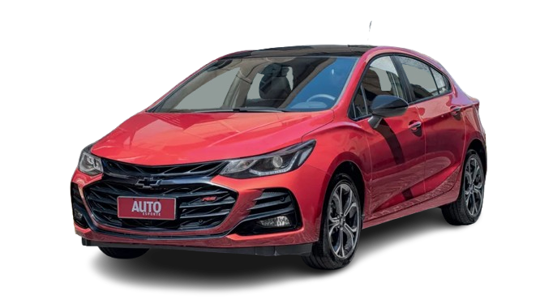

CRUZE SPORT6 RS
Moderno e refinado, o Cruze Sport6 RS combina a elegância de um hatch médio com um visual mais agressivo e pegada esportiva, sendo a versão mais ousada já produzida do modelo no Brasil.

HISTÓRIA
Após a saída de Hyundai i30, Fiat Bravo, Ford Focus e Volkswagen Golf, o mercado brasileiro chega a 2022 com o Chevrolet Cruze sendo o único hatch médio à venda.
Esse último suspiro ficou ainda mais restrito com a chegada do Cruze RS, que passa a ser também a única versão deste carro.
Sob o capô, o Cruze RS traz o motor 1.4 turboflex é um bom conjunto. Ele desenvolve até 153 cv a 5.200 rpm e 24,5 mkgf a 2.000 rpm com etanol. Esse motor, como todos os demais da GM, passou por novas calibrações para atender ao Proconve L7, mas sem perder potência ou torque. Ele vem associado a um câmbio automático de seis velocidades.
A suspensão tem uma calibragem diferente segundo a GM, mais adaptada às dimensões e a esportividade que esperadas do hatch. O acerto é bom, mantém o carro firme nas curvas.
FICHA TECNICA
Modelo: Cruze Sport6 RS
Ano: 2022-2005
Motor: 1.4 turbo flex
Potência: 153 cv
Torque: 24,0 kgfm
0–100 km/h: 9,4 s
Vel. Máx: 214 km/h
Peso: 1.321 kg
Tração: Dianteira
Câmbio: Automatico 6 marchas
Dimensões (C×L×A): 4.448×1.807×1.489 mm
CURIOSIDADE
o Chevrolet Cruze Sport6 RS é que ele foi o último hatch médio de marca generalista (não premium) a ser vendido no mercado brasileiro
GALERIA
Imagens do Cruze Sport6 R6
Canal: Carro Chefe